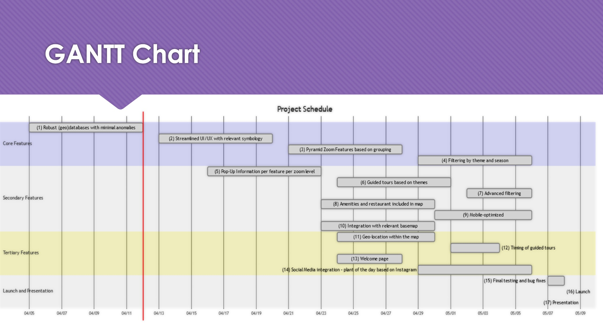
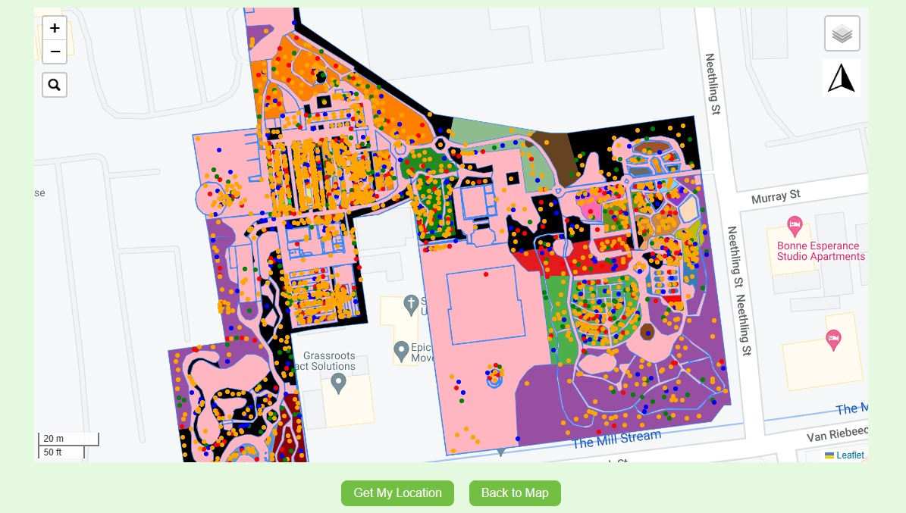
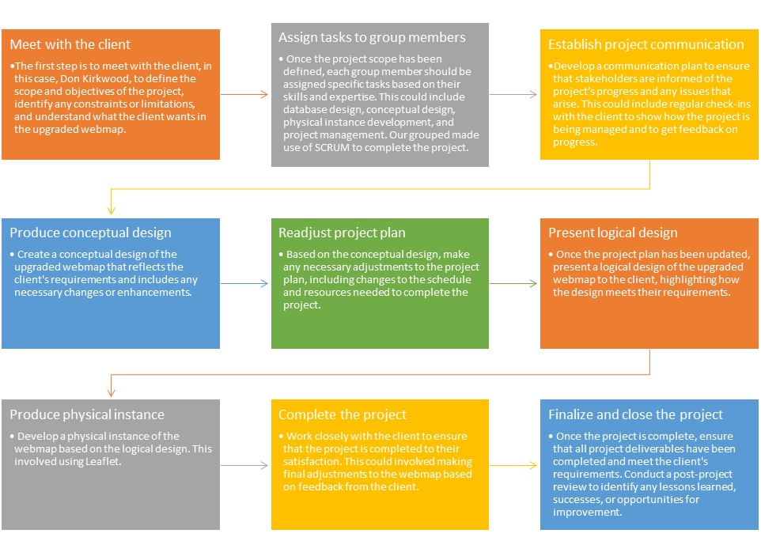

Project management is the process of using skills, experience, and knowledge to achieve a unique product that meets specific requirements. At its core, a project has a clear beginning and end, and its success depends on careful planning, execution, and management of resources. This includes asking important questions like what tasks need to be completed, who is responsible for them, and how much time and resources are available. Effective project management involves breaking down the project into manageable steps, planning how each step will be executed, and ensuring that everything stays within budget and is completed on time. If you're looking to improve your project management skills or learn more about this fascinating field, you've come to the right place.
Botanical Garden Assignment
We were tasked with producing an upgraded webmap for the Stellenbosch botanical garden, with the client being the curator of the garden, Don Kirkwood. To achieve this goal, we needed to apply project management processes and techniques to ensure that we delivered the project within the allocated time and budget. As a team of four group members, we worked effectively together and utilized tools such as Gantt charts to stay on track and meet the client's requirements. In this account, I will discuss how we managed the project and the lessons we learned from this experience.

How Project Management was Implemented Completing The Task
Working on the webmap prototype for Don Kirkwood was a challenging project that required effective project management skills to ensure its successful completion. As the project team, we needed to deliver a prototype webmap that met the client's requirements and upgraded the current one. To achieve this goal, we had to apply project management processes, which included regular check-ins with the client to show how we were managing and if we were on the right track.
In the initial stages of the project, we had to produce logical designs, physical instances, and conceptual models. We had to do database design to ensure that the webmap works as effectively as possible since we made use of leaflet technology. The client's requirements were very clear, and we needed to ensure that we delivered the project within the agreed timeline.
Our team consisted of four group members, and we had to work together effectively to complete the project on time. We had regular meetings where we discussed the progress we were making and how we could work together more effectively. We developed a plan to finish the project as accurately as possible, and this helped us stay on track and ensure that we were meeting the client's requirements.
To manage the project effectively, we used project management techniques such as Gantt charts to keep track of our progress and ensure that we were meeting the deadlines we had set for ourselves. We also used other tools and techniques such as brainstorming sessions to generate ideas and resolve issues that arose during the project.

Steps Followed Completing This Assignment

Conclusion
I feel that we did an excellent job of managing this project. Our team was able to work together effectively, and we were able to meet the client's requirements and deliver the project within the agreed timeline. The use of project management techniques helped us stay on track and ensure that we were meeting the deadlines we had set for ourselves. I am proud of the work we did and feel that we learned a lot from this experience.